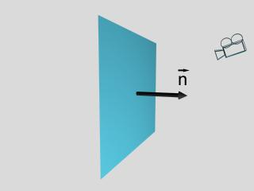
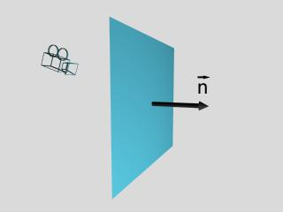

En aquest apartat descriurem un algorisme que determina la visibilitat d'objectes convexos en espai mixt i redueix el cost de la visualització de moltes escenes.
Tal com hem introduït en la descripció dels objectes geomètrics, les cares dels objectes que configuren una escena es consideren amb dues bandes determinades per l'orientació de la seva normal. Usualment només la banda exterior es considera potencialment visible per l'observador, donat que la visió de la banda interior queda obstaculitzada pels punts interiors a l'objecte (si aquest es considera opac).
L'algorisme de filtratge de cares visibles (conegut per l'anglicisme culling), determina, a partir de l'orientació d'una cara i d'una posició concreta de visió, a quina banda de la cara s'hi troba la càmera; en cas d'ubicar-se en la banda exterior considera que la cara és visible per l'observador, altrament que no ho és. Podem veure un exemple en la figura.
L'algorisme treballa en espai objecte i només calcula la visibilitat geomètrica exacta d'una cara si l'escena està formada per un sol objecte convex. Altrament, altres cares del propi o d'altre objecte poden obstaculitzar totalment o parcial la seva visió i el filtrat de cares no ho detectaria donat que per a realitzar el test de visibilitat només considera: una cara aïllada i l'observador.
|  |  |
Generalment, el culling és un algorisme utilitzat com a pre-procés d'altres mètodes de determinació de visibilitat donat que de manera eficient filtra un nombre important de cares no visibles (de l'ordre de la meitat) amb un cost computacional baix.
El següent applet mostra un objecte convex i les cares considerades
visibles des de la càmera; qualsevol que sigui l'orde de visualització
de les cares produirà una imatge correcta. Si passem a les dues
imatges següents (pitjant en el botó de fletxa a la dreta en totes
dues pantalles) veurem un objecte còncau i les cares considerades
visibles; la cara vermella només es parcialment visible i el
filtrat la determina visible produint una determinació de visibilitat
incorrecta. Per últim, si passem a l'última parella d'imatges, es
mostra una escena amb dos objectes convexos; la determinació de
visibilitat per cada objecte aïllat és correcte però no ho és la
conjunta donat que no es detecta que l'objecte blau tapa el
vermell. En algunes escenes la visualització ordenada de les cares
filtrades (algorisme espai mixt) produeix imatges correctes des de la
perspectiva de la visibilitat.
El filtrat es pot ubicar en diferents posicions del procés de visualització 3D: